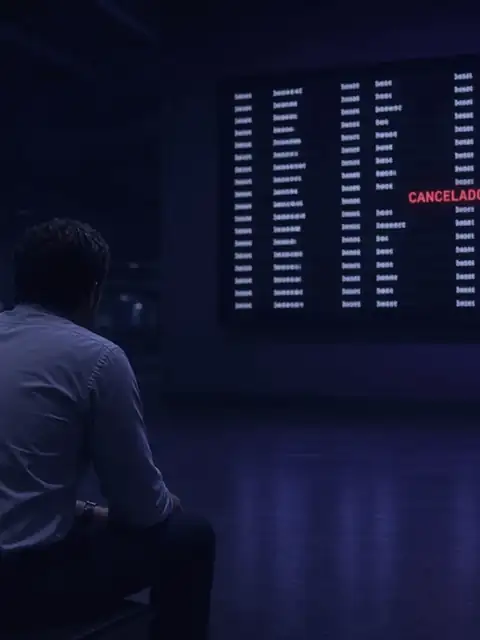
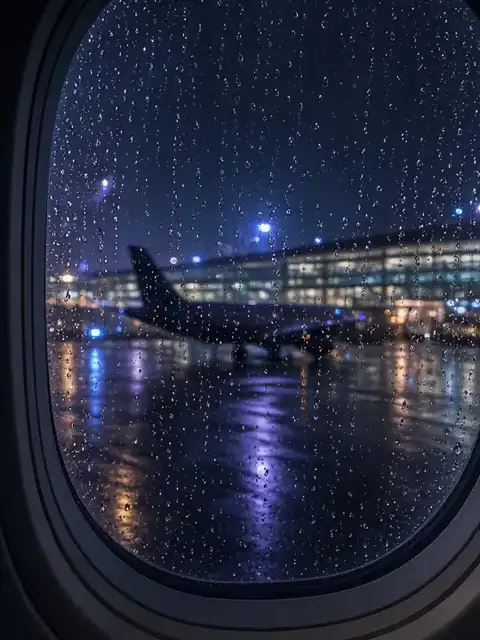

Rede de Proteção Sala do Passageiro
Guia do Passageiro · Informativo · Res. ANAC 400/2016, com alterações das Res. 813/2026 e 819/2026
Está no aeroporto agora? Toque no que aconteceu com você.
Toque na situação que aconteceu com você para ver o que fazer agora, o que guardar como prova e quais são os seus direitos.
- Conteúdo informativo
- Normas conferidas em 03/11/2026
- Fontes oficiais
Em cartaz na Sala do Passageiro
Sua profissão, seu prejuízo
5 títulos- Novo · MicrotemaA cirurgia não esperou. O voo também não veio.Sou médicoSou médico e perdi uma cirurgia por causa do cancelamento do voo

Artigo · 11 minMeu voo foi cancelado. Quais são meus direitos?Reacomodação, reembolso, alimentação, hotel e overbooking: o que as regras da ANAC em vigor garantem. Artigo · 13 minMinha mala não chegou ou chegou danificada. O que fazer ainda no aeroporto?O registro no desembarque, os prazos e o que guardar como prova.
Artigo · 13 minMinha mala não chegou ou chegou danificada. O que fazer ainda no aeroporto?O registro no desembarque, os prazos e o que guardar como prova.
Nesta salaEstá no aeroporto agora? Toque no que aconteceu com você.Nove situações no painel de partidas: o que fazer agora, o que guardar e seus direitos.- Nesta sala · checklistCartão de embarque: o que guardar antes de sair do aeroportoOnze itens para marcar. Fica salvo só neste navegador.
Partidas · situações
Horário de Brasília
Voo cancelado
Faça agora
- Peça por escrito: causa, protocolo e opções.
- Escolha: reacomodação, reembolso ou outro transporte.
- Peça a assistência pelo tempo de espera.
Guarde como prova
- Foto do painel e print do app
- E-mails, SMS e protocolo
- Recibos de gastos
Seus direitos
- Reacomodação gratuita, na primeira oportunidade ou na data que preferir
- Reembolso em até 7 dias da solicitação: integral se pedido na origem, escala ou conexão; proporcional se o trecho já voado aproveitar a você
- Alimentação após 2 h; hotel e traslado após 4 h, se houver pernoite
Ver detalhes e fundamento
A reacomodação pode ser em voo próprio ou de outra companhia, para o mesmo destino. O reembolso segue o meio de pagamento da compra; crédito só com sua concordância.
Quem mora na cidade do aeroporto de origem pode receber, em vez de hotel, o transporte gratuito de ida e volta até a residência. Pessoa com deficiência ou mobilidade reduzida e seus acompanhantes têm direito a hospedagem mesmo sem pernoite, salvo acomodação adequada com concordância expressa. Se você escolher reembolso integral ou reacomodação em data de sua conveniência, a companhia pode deixar de oferecer a assistência material.
Interrompida a viagem, ainda que por evento imprevisível, o transportador deve concluí-la à sua custa e arcar com estada e alimentação durante a espera (CC, art. 741). Caso fortuito ou força maior não afasta a assistência nem as alternativas (CBA, art. 256, § 4º).
Res. ANAC 400/2016, arts. 21, 26 a 31 (art. 27 com redação da Res. 813/2026, em vigor desde 26/10/2026); CBA, arts. 229 e 256, § 4º; CC, art. 741
Leia o artigo: Meu voo foi cancelado. Quais são meus direitos? · Quais são os direitos do passageiro quando o voo atrasa ou é cancelado? · Como pedir o reembolso da passagem aérea e em quanto tempo o dinheiro deve voltar?
Atendimento online em todo o Brasil.
Voo atrasado
Faça agora
- Anote o horário previsto e cada nova previsão.
- Após 2 h, peça a alimentação.
- Após 4 h, peça as opções: reacomodação, reembolso ou outro transporte.
Guarde como prova
- Prints das previsões com horário visível
- Cartão de embarque
- Recibos, se pagar algo
Seus direitos
- Informação imediata do atraso e da nova previsão, atualizada no máximo a cada 30 min; o motivo, por escrito, se você pedir
- Alimentação após 2 h
- Após 4 h: escolha entre reacomodação, reembolso ou outra modalidade; hotel e traslado se houver pernoite
Ver detalhes e fundamento
Regra atual (art. 20 da Res. 400/2016, redação original): a companhia deve informar imediatamente o atraso, com a nova previsão de partida, o cancelamento ou a interrupção, atualizar a previsão no máximo a cada 30 minutos e informar por escrito o motivo, quando solicitado.
A partir de 25/11/2026 (Res. 813/2026, com o prazo fixado pela Res. 819/2026): a informação deverá ser clara, acessível e imediata, inclusive por canais digitais, abrangendo a situação, a previsão atualizada, as alternativas de reacomodação, reembolso ou outro transporte e como obter a assistência; nos canais digitais, com data e hora da última atualização.
Se não houver como fornecer a assistência diretamente, em situação excepcional, a companhia pode reembolsar despesas necessárias, razoáveis e comprovadas em até 7 dias. Guarde as notas.
Res. ANAC 400/2016, arts. 20 (nova redação em vigor em 25/11/2026), 21, I, 27 e 27-B (Res. 813/2026, em vigor desde 26/10/2026); CBA, arts. 230 e 231
Leia o artigo: Quais são os direitos do passageiro quando o voo atrasa ou é cancelado? · Voo atrasado ou cancelado me fez perder um compromisso de trabalho. Posso pedir indenização pelo que deixei de ganhar? · Sou médico e perdi o voo e um compromisso financeiro: posso ser ressarcido? · Atraso ou cancelamento de voo dá direito a indenização por danos morais?
Atendimento online em todo o Brasil.
Impedido de embarcar (overbooking)
Faça agora
- Peça declaração escrita de negativa de embarque.
- Não aceite registro como “desistência”.
- Peça a compensação imediata e as opções.
Guarde como prova
- Check-in e cartão de embarque
- Horário em que chegou ao portão
- Termo de acordo, se houver
Seus direitos
- Compensação imediata: 250 DES (doméstico) ou 500 DES (internacional)
- Reacomodação, reembolso ou outro transporte, à sua escolha
- Assistência material
Ver detalhes e fundamento
Preterição é deixar de transportar quem se apresentou para o embarque. Antes, a companhia deve buscar voluntários; quem aceita compensação negociada não é preterido. Leia o termo antes de assinar: verifique se há quitação ampla.
DES: Direito Especial de Saque, unidade do FMI convertida em reais.
Res. ANAC 400/2016, arts. 21, III, 22 a 24 e 26, IV
Leia o artigo: Fui impedido de embarcar por overbooking: quais são os meus direitos?
Atendimento online em todo o Brasil.
Mala não chegou ou foi para outro destino
Faça agora
- Registre o protesto no balcão antes de sair do desembarque (RIB/PIR).
- Informe por escrito o endereço de entrega.
- Compre só o indispensável e guarde as notas.
Guarde como prova
- Etiqueta da mala e número do registro
- Descrição da mala e do conteúdo
- Notas das compras emergenciais
Seus direitos
- Devolução em até 7 dias (doméstico) ou 21 dias (internacional)
- Não localizada nesses prazos: indenização em até 7 dias
- Fora do seu domicílio: ressarcimento de despesas em até 7 dias da apresentação dos comprovantes
Ver detalhes e fundamento
Em voo internacional, a Convenção de Montreal também considera a bagagem não chegada após 21 dias para fins de direitos, e o protesto por atraso deve ser escrito em até 21 dias da entrega.
Res. ANAC 400/2016, arts. 32 e 33; Convenção de Montreal, arts. 17 e 31
Leia o artigo: Minha mala não chegou ou chegou danificada. O que fazer ainda no aeroporto? · Minha mala não chegou: quanto tempo a companhia tem para devolver e o que posso cobrar enquanto espero?
Atendimento online em todo o Brasil.
Mala danificada ou violada
Faça agora
- Fotografe a mala, a etiqueta, os lacres e o conteúdo.
- Faça o protesto por escrito em até 7 dias.
- Não conserte nem descarte nada antes de documentar.
Guarde como prova
- Fotos e vídeo
- Comprovantes de valor dos itens
- Protocolo do protesto
Seus direitos
- Em até 7 dias do protesto: reparo, substituição ou indenização
- Receber sem protesto faz presumir entrega em bom estado
Ver detalhes e fundamento
Item frágil despachado pode deixar de ser indenizado, nos termos do contrato. Em voo internacional, o protesto por avaria deve ser escrito, em até 7 dias do recebimento.
Res. ANAC 400/2016, arts. 32, §§ 4º e 5º, e 34; Convenção de Montreal, art. 31
Leia o artigo: Abri a mala em casa e estava quebrada ou faltavam objetos: ainda dá para reclamar? · Minha mala não chegou ou chegou danificada. O que fazer ainda no aeroporto?
Atendimento online em todo o Brasil.
Perdi a conexão
Faça agora
- Informe a companhia antes de abandonar o itinerário.
- Peça as opções por escrito.
- Pergunte se os trechos seguintes ficam preservados.
Guarde como prova
- Bilhete: único ou trechos separados
- Horários do voo que atrasou
- Recibos de gastos
Seus direitos
- Se a causa for do transportador: reacomodação, reembolso ou outro transporte
- Assistência material durante a espera
Ver detalhes e fundamento
Bilhetes comprados em um único contrato e trechos comprados separadamente podem ter tratamento diferente. Guarde o comprovante de compra de cada trecho.
Res. ANAC 400/2016, arts. 21, IV, e 26 a 28
Leia o artigo: Perdi a conexão porque o primeiro voo atrasou: quais são os meus direitos?
Atendimento online em todo o Brasil.
Mudança de horário antes do voo
Faça agora
- Verifique se o aviso chegou com 72 h de antecedência.
- Se não concordar com o novo horário, peça as opções.
- Guarde o aviso recebido.
Guarde como prova
- E-mail ou SMS da alteração, com data
- Itinerário original
Seus direitos
- Aviso com 72 h, no mínimo
- Reacomodação ou reembolso integral, à sua escolha, se o aviso for tardio ou a mudança superar 30 min (doméstico) ou 1 h (internacional)
- Se foi ao aeroporto por falha na informação: assistência e as três alternativas
Ver detalhes e fundamento
A alteração programada não se confunde com atraso no dia do voo.
Res. ANAC 400/2016, arts. 12 e 25
Leia o artigo: A companhia aérea mudou o horário do meu voo: posso remarcar ou pedir reembolso?
Atendimento online em todo o Brasil.
Não usei a ida: e o trecho de volta?
Faça agora
- Em voo doméstico, avise a companhia até o horário da ida que vai usar a volta.
- Guarde o protocolo do aviso.
Guarde como prova
- Protocolo ou e-mail do aviso
- Bilhete de ida e volta
Seus direitos
- Em voo doméstico, com o aviso no prazo, a volta não pode ser cancelada
- É vedada a cobrança de multa para essa finalidade
Ver detalhes e fundamento
Sem o aviso, a companhia pode cancelar o trecho de volta de passagens do tipo ida e volta.
Res. ANAC 400/2016, art. 19
Leia o artigo: Comprei a passagem e desisti: posso cancelar em 24 horas sem multa?
Atendimento online em todo o Brasil.
Voo internacional
Faça agora
- Faça os protestos de bagagem por escrito e no prazo.
- Guarde a etiqueta e o bilhete completo.
Guarde como prova
- Itinerário com origem, escalas e destino
- Protestos escritos
Seus direitos
- Danos materiais: limites da Convenção de Montreal; bagagem: 1.000 DES por passageiro no texto promulgado, valor revisado a cada cinco anos (art. 24) e que deve ser conferido na data do fato, salvo declaração de valor
- Danos morais: Convenção não se aplica; incide o CDC (STF, RE 1.394.401)
- Ação pela Convenção: 2 anos
Ver detalhes e fundamento
É internacional o transporte com partida e destino em países diferentes, ou com escala prevista em outro país. Voo nacional segue o CDC (art. 14) e o CBA (art. 215).
Decreto 5.910/2006, arts. 1, 17, 19, 22, 24, 31 e 35; STF, RE 1.394.401
Leia o artigo: Voo internacional atrasado, cancelado ou com mala extraviada: vale o Código do Consumidor ou a Convenção de Montreal?
Atendimento online em todo o Brasil.
Checklist de provas
O que dizer ao atendente
“Meu voo [número], previsto para [horário], consta como [atrasado/cancelado]. Solicito informação escrita sobre a ocorrência e sua causa, a previsão atualizada, o protocolo, as alternativas de reacomodação ou reembolso e a assistência aplicável. Peço que registre também se não há opção disponível e qual foi a orientação fornecida.”
Não faça
- Apagar mensagens ou descartar comprovantes.
- Comprar outra passagem antes de registrar a opção oferecida.
- Abandonar o itinerário sem entender os efeitos nos demais trechos.
- Assinar quitação ou acordo sem ler as condições.
- Sair do desembarque sem registrar o problema com a mala.
- Exagerar fatos ou prejuízos.
Indenização não é automática
Assistência material não se confunde com reparação de danos e não implica reconhecimento de culpa. O dano moral depende da demonstração do prejuízo e de sua extensão. Desde 26/10/2026, a Res. 400/2016 também registra que a responsabilidade civil segue a lei e os tratados e que, nos termos do CBA, o caso fortuito ou de força maior pode afastá-la; a assistência material e as alternativas continuam devidas mesmo nesses casos.
Leia o artigo: Atraso ou cancelamento de voo dá direito a indenização por danos morais? · Qual é o prazo para reclamar ou processar a companhia aérea? · Como reclamar da companhia aérea na ANAC e no consumidor.gov.br?
Res. ANAC 400/2016, arts. 25-B e 26, parágrafo único (Res. 813/2026); CBA, arts. 251-A e 256, §§ 1º, II, 3º e 4º; CDC, art. 14
Atenção: no Tema 1.417, o STF discute se as normas do transporte aéreo prevalecem sobre o CDC em atraso ou cancelamento por caso fortuito ou força maior. Há suspensão nacional dos processos sobre essa questão desde 26/11/2025; o mérito ainda não foi julgado.
Atendimento online em todo o Brasil.
Artigos do Guia do Passageiro
Outras áreas
Fontes oficiais
- ANAC. Resolução nº 400/2016, texto compilado (alterações das Res. 434/2017, 692/2022, 800/2026 e 813/2026).
- ANAC. Resolução nº 813/2026: em vigor desde 26/10/2026, exceto a nova redação do art. 20 (informação ao passageiro), que entra em vigor em 25/11/2026.
- ANAC. Resolução nº 819/2026 (DOU 26/10/2026), que fixou essas datas de vigência.
- Lei nº 8.078/1990 (CDC).
- Lei nº 7.565/1986 (CBA) e Lei nº 14.034/2020 (arts. 251-A e 256).
- Código Civil, art. 741: texto oficial (Câmara dos Deputados).
- Decreto nº 5.910/2006 (Convenção de Montreal) e limites revisados (ICAO, 2024).
- STF. RE 1.394.401; Tema 1.417.
Conteúdo exclusivamente informativo, nos termos do Provimento nº 205/2021 do CFOAB. Não constitui consulta jurídica nem garante resultado. Normas conferidas em 03/11/2026.
Lucas Brito Ladeia · Advogado · OAB/MA 16.091 · Imperatriz-MA
Atendimento online em todo o Brasil.
Contato
Contato pelo WhatsApp
Envie uma mensagem pelo WhatsApp. O atendimento é sigiloso e cada caso é analisado individualmente, sem promessa de resultado.